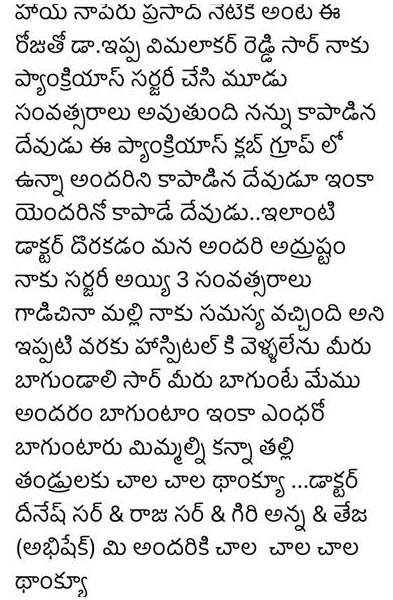
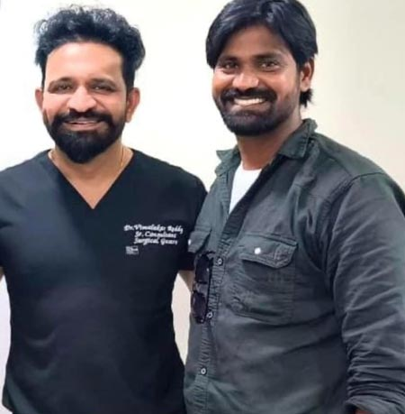

spandana medipally
I had undergone Whipples surgery for an NET 4 months ago. Dr. Vimalakar Reddy and his team, are beyond the shadow of a doubt, one of the finest teams ever. Mine was a supra major surgery -- not only was it succesful but my recovery has also been smooth. I can confidently say that Dr. Vimalakar has been a God sent. I've never come across an entire team of doctors who constantly care and check on you thrice a day during post op and ensure that you're healing well. They have been proactive and taken great care of me. I am not exaggerating when I say that empathy and care are the values the entire team holds sacred and that speaks volumes about Dr.Vimalakars leadership. Special mention and gratitude for Dr. Raju who has consistently helped me and always been available even after discharge until this day should I have any questions. Dr Vimalakar sir, you've been such an integral part of my health and I can never be grateful enough. I thank God for bringing you as my doctor and your entire team. God bless you, sir.
Sekar
నా పేరు శేఖర్. మా నాన్నగారు కొంతకాలంగా లూజు మోషన్స్ తో చాలా ఇబ్బంది పడుతున్నారు. రేజుకు కనీసం 50 సార్లు లూజ్ మోషన్స్ అయ్యేది. ఎన్నో హాస్పిటల్స్ తిరిగిన ఫలితం రాలేదు. యూట్యూబ్ ద్వారా Dr విమలకర్ రెడ్డి సార్ గారిని కలిసాము. స్కానింగ్ తీయగా పెద్ద పేగులో క్యాన్సర్ పుండ్లు ఉన్నాయని తేలింది. మాకు చాలా భయమేసింది. దీనికి పరిష్కారం గాను విమలాకర్ రెడ్డి సార్ గారు నేను ఉన్నానని ధైర్యం ఇచ్చారు. లాపరోస్కోపిక్ ద్వారా ఆపరేషన్ చేసి మా నాన్నగారిని బతికించారు. ఆపరేషన్ అయ్యాక స్తోమ బ్యాగ్ వేసి కీమోథెరపీ విమలాకర్ రెడ్డి సార్ గారు దగ్గరుండి చేయించారు. ఆ తరువాత మళ్లీ స్టోమా బ్యాగ్ తీసి మళ్లీ రీ కలెక్షన్ ఇచ్చాడు. దీనికిగాను మాకు శ్రీమలాకర్ రెడ్డి సార్ గారి టీం ఎంతో సహాయపడింది. మేము ఎప్పుడు కాల్ చేసినా మాకు అందుబాటులో ఉండి తగిన సహాయం అందించారు. ఎిమలాకర్ రెడ్డి సార్ గారి పిఏ గిరిబాబు గారు కూడా మాకు ఎప్పుడూ అడిగినా కాదనకుండా సహాయం అందించేవాడు. Dr విమలాకర్ రెడ్డి సార్ గారు మా కుటుంబానికి ఒక దేవుడిని నిలిచి మా నాన్నగారి ప్రాణాలను బతికించారు. దీనికిగాను మేము ఎిమలాకర్ సార్ గారికి కృతజ్ఞలై ఉంటాము. మా నాన్నగారిని కాపాడిన విమలాకర్ రెడ్డి సార్ గారికి మరియు సార్ గారి టీం మెంబెర్స్ కి సన్ఫెన్ హాస్పిటల్ కి మా యొక్క హృదయపూర్వక ధన్యవాదాలు

Prasad

Swapna Reddy
Dr. Vimalakar Sir did a great job with my mother's first ever health treatment. He explained everything to us in a very clear manner. He was also kind and friendly. All of the Sunshine staff was great and they were very helpful, patience and helped us. Once again thank you Sunshine Hospital
Vinod Babu Mallipeddi
Vimalakar sir done byGastractmy surgery to my father Radha Krishna Murthy. We felt very happy. And hospital care also very fine.thankyou sir
priyanka kandukuri
Hi this Priyanka...I got liver surgery on 26th December...I really pleaser admit in this hospital and first I talk about the Dr vimalakar sir such a kind hearted and very well humanbeing and he treated patients very carely....I really thank full on u sir...and hole team of hospital
Sagarika Reddy
We love Doctor K.V. Dinesh Reddy and his team. He is down to earth and has a great bedside manner. They are like a extended family. I hope he never leaves from here, replacing him will be extremely difficult. Doctors are very professional. HIGHLY Grateful for his experience & wide range of knowledge.
Danam sathwika
Dr vimalakar reddy and team took care of us very well Found a proper diagnosis and solution after roaming many other hospitals Best doctor and moreover best human being
Karuna Devi
My husband had a problem of umblical hernia and suffered with severe pain. Got admitted in Sunshine and Dr Vimalakar Reddy sir done lap surgery, with in 24 hrs , he could able to walk do his won works , he is perfectly alright now. Thanks to doctor sir
Dharavath Saicharan
Happy to say that my father getting recovery from chronic pancreatitis Doctor vimalakar Reddy and team had taken stand and staff also , hospital have good environment Thankyou Dr.Vimalakar Reddy sir and his team. Thankyou sunshine hospital
Vinay Kumar K S
Had to take my father for an emergency. Vimalakar reddy sir and staff was very professional and reachable. Very much satisfied with the way the surgery was done and post operative care. Thank you.
venkat reddy
Dr vimalakar sir treated patients very carefull and explain the situation very well and hole team of hospital treated patients well..
Darnender Rao Kalvakota
The services that I receive from Dr vimalakar reddy sir is excellent and the staff are friendly and ensure that I am properly informed about my health and care. I would have no qualms in recommending them to friendly and friends.
Raja Chaitanya Vikram G
Doctor is really friendly, and he takes the time to explain the procedure and treatment to us in great detail. As a result of colon cancer, my father has had to undergo colostomy surgery... My father recovered and was in good health as a result of his superb handling of the situation. Our second visit was for colostomy closure, and the doctor took his time to carefully review the situation. Closure was accomplished using a large intestine and with extreme caution. He has now begun to regain his health. Throughout the treatment, he encouraged my father to work hard to ensure a rapid recovery. I can't express my gratitude to you enough for your assistance... I would strongly recommend Dr. Vimalakar Reddy sir for any gastrointestinal concerns you may be experiencing.
prasanna rani
Dr.vimalakar reddy was a wonderful surgeon.He is incredible not only has he taken great care of my health but also he is lovely to speak with every appointment.means friendly doctoring, he did a great job with my first ever health exam.He explained everything to me and to my family in a clear understandable manner.I immediately felt at ease and felt confident In my receiving expertized medical care.He treats everyone as his own.Thanking you always doctor because what iam.. I've never had to wait more than few minutes when I arrive on time for an appointment..The staff was great too.
Sharada Chanda
Very good care and painless treatment was given...And also helped in quick diagnosis and proper medication...Thanks to you!
krishnamohan bollepalli
Dr. Vimalakar Garu and and his Team is Very Capable to handle all types of surgeries. We are very happy to come over here for Gal bladder Surgery. Thank you Vimalakar Garu and his team.
Venkata Siva Reddy Kallam
We love Dr E Vimalakar Reddy sir and his team, we are soo glad to choose Dr E Vinalakar Reddy and highly recommended to any General surgery & Gastro problem patients … This is the 3rd surgery to my father in Sunshine Hospital ( Sec’d)
Dorolla srikanthreddy
Let me take a few moments to appreciate about my life saver. Anna your so amazing doctor who did his best to treat me properly. I am so blessed and happy to have a doctor like you. Your effort is priceless and thank you is very small word to express my feeling. All the best and Special thanks to Dr. Raju M, Dr. Dinesh Reddy, Giri, Teja and entire Team Vimalakar. 😍😍😍
Sunil Kumar
We are very happy with Vimalakar reddy sir and the team that took care of us during and after surgery .We are delighted and thankful to them.Special regards Giri Sir ,Teja sir and team.
Sadatiya Vijay
Had gone through Haemorrhoids surgery , it’s really good now. Vimalakar sir and his team are really good and post surgery suggestions are rally with following
Rakesh Byri
Wonderful experience with Sunshine Hospital. Dr. E.Vimalakar Reddy is a wonderful surgeon, and the staff was always helpful and kind. I am so glad I chose Dr. E. Vimalakar Reddy and would highly recommend to anyone. Thank you very much Sir
mehraj jabeen
My mother laproscopic surgery recently done. After recovery my mother is good. Doctor treated well. Thank you Dr vimalakar Reddy sir and their team member and secretary giri
Asma Ashu
He is Very poliet and he explain Very well..My father was affected to colon Cancer... He undertook the case and now he was in good condition. He explained very clearly about the problem.. Thank you very much sir for your support... I totally recommend all of the them who was searching for a good doctor
pranay baradhwaj
The Dr. vimalakar Reddy sir is a efficient and knowledgeable doctor. As my father has joined this hospital during Feb2021and had a inguinal hernia surgery. And now feeling well. The treatment and their suggestions are found good. Thank you entire team and thank you sunshine.
suhas kumar
Vimalakar Reddy Sir,Dinesh sir, Raju sir and team treated my father right hemicolectomy anatomy procedure exceptionally very well. vimalakar sir and his team are very cooperative, excellent in the treatment and available all the time.
Emmanuel Varkey
Amazing doctor!! He is great with his patients and spends time explaining the procedure, clarify your questions and also just to get to know you. I would recommend him to anyone!
Zaitoon Rampurawala
I was suffering from stomach infection. I visited Dr. Vimalakar reddy. Now I am completely cured.I had very amazing experience with him.very warm and humble person.and the staff is also very good and cooperative.
Anish Gopagani
Dr. Vimalakar reddy did my inguinal hernia surgery and I’m very happy that surgery went very well and he’s so polite and well experienced and I would recommend to everyone who has gastro related problems.
Alankritha tales
Doctor took us through the procedure in an effortless manner. Post operative recovery was fantastic. Great team !
K Sandhya
Happy to say our docotor mr.nalin kanth suggest the docotor vimalakar reddy for surgery (pistula). We are very satisfied the treatment ,staff(Giri) is helpfull nature , Thank you all .
Venkatesh Bonakurthi
My mom had a severe abdominal pain from a week and in CT scan it showed stones in intestine. When admitted in sunshine hospital Dr Vimalakar explained where exactly it got stuck and how it would be fixed. He had done laparoscopic surgery on same day without any delay and removed the stone. Post surgery mom is recovering well. A heartfelt thanks to Dr Vimalakar and his team for the successful surgery done to my mom.
Shirish Pathak
Dr Vimalakar Sir and his team were so efficient as we have come with issue of hemicolectomy for my father and got operated successfully.Their complete team were friendly and have treated with best treatment upfront and have also guided us to get the best services.
venkatesh palle
Doctor and his team clearly explained about the surgery procedure and the complications. Handled the laparoscopy surgery for umbilical herina surrounded with mass very comfortably with his immense experience. Moreover very handsome and funny with me..😍 thank you so much doctor and his team members..
sreekanth yadav
Excellent on timely services provided. Doctor and his team clearly explained about the surgery procedure and the complications. Handled the laparoscopy surgery for acute appendicitis surrounded with mass very comfortably with his immense experience.